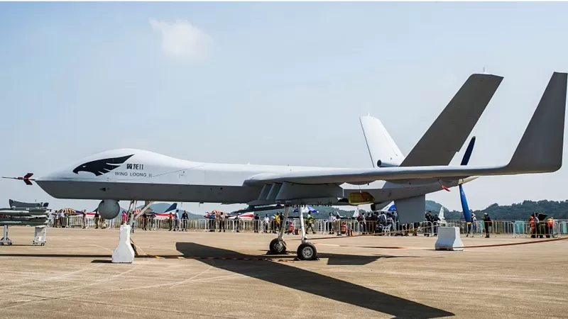
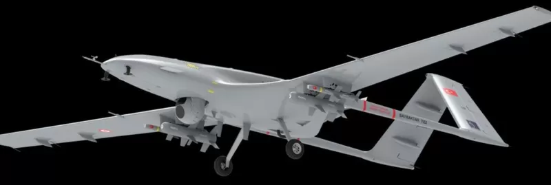
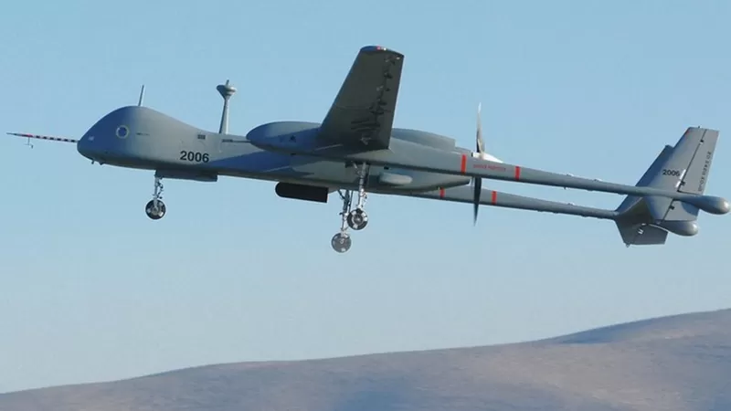

ድሮን፡ በጦርነት ቀጠናዎች ውጤትን እየቀየሩ ያሉት ሰው አልባ አውሮፕላኖች
30 ሚያዝያ 2022

ከቅርብ ዓመታት ወዲህ ሰው አልባ አውሮፕላኖች ወይም ድሮኖች በጦርነት ስፍራዎች ውስጥ በከፍተኛ ሁኔታ ውጤትን እየቀየሩ ስለመሆኑ ይነገርላቸዋል።
ድሮኖች በስለላ እና የጥቃት ተልዕኮዎችን በማሳካት በጦር ቀጠና ውስጥ ተጽእኖ ፈጣሪ ሆነዋል። ለዚህም ደግሞ ጥሩ ማሳያ የሚሆነው በቅርቡ በአዘርባጃን እና በአርሜኒያ መካከል የተካሄደው ጦርነት ነው። በአዘርባጀን በኩል በጦርነቱ ጥቅም ላይ የዋሉት ቱርክ ሠራሽ ድሮኖች የአዘርባጃን ጦር ድል እንዲቀዳጅ ምክንያት ከሆኑ ጉዳዮች መካከል ይተቀሳሉ። በሰሜን ኢትዮጵያ ጦርነት ከተነሳ ወዲህ የፌደራሉ መንግሥት በህወሓት አማጺያን ላይ ድሮኖችን ስለመጠቀሙ የሚጠቁሙ ሪፖርቶች በስፋት ሲወጡ ቆይተዋል። ምንም እንኳን ቢቢሲ በዚህ ግጭት የትኞቹ ድሮችን ለየትኛውን ወታደራዊ ተልዕኮ ጥቅም ላይ ውለዋል የሚለውን ማረጋገጥ ባይችልም፣ ጠቅላይ ሚንሰትር ዐቢይ አሕመድ ግን ድሮን በዚህ ግጭት ጥቅም ላይ ስለመዋሉ አመላክተው ነበር። የአገሪቱ አየር ኃይል አዛዥ ሜጀር ጄነራል ይልማ መርዳሳም ሕዳር 2013 ዓ.ም በብሔራዊ ቴሌቪዥን ጣቢያ በቀረቡበት ወቅት ኢትዮጵያ በዚህ በጦርነት ሰው አልባ አውሮፕላን ጥቅም ላይ እንዳዋለች አረጋግጠው ነበር።
- link1
- link2
- link3
ድሮን በጦርነት ውስጥ እንዴት ጥቅም ላይ ይውላል?
ድሮኖች ከሁለገብ ጥቅማቸው በተጨማሪ ሁለት መሠረታዊ ወታደራዊ ግልጋሎቶችን ይሰጣሉ። ለስለላ (ከጠላት ወገን መረጃ ለመሰብሰብ) እና ጥቃት ለመፈጸም (በጠላት ኃይል ላይ አውዳሚ መሳሪያ ለመተኮስ) ጥቅም ላይ ይውላሉ። የድሮን አካለ መጠን ከመደበኛ የጦር ወይም የሲቪል አውሮፕላኖች ጋር ሲነጻጸር እዚህ ግባ የሚባል አይደለም። ድሮንን የሚያበረው ወይም ቁጥጥር የሚያደርግበት በብዙ ርቀት ላይ የሚገኝ ባለሙያ ነው። ይህ ባለሙያ ተንቀሳቃሽ በሆነ መቆጣጠሪያ ማዕከሉ ሆኖ በሳተላይት ግንኙነት አማካኝነት ለድሮኑ ትዕዛዝ ይሰጣል። በጦርነት አውድማ ውስጥ በተቀናቃኝ ላይ ከፍተኛ ውድመት በማስከተል ውጤታማ ናቸው የተባሉና ተፈላጊ ከሆኑ ድሮኖች መካከል ቻይና፣ ቱርክ፣ አሜሪካ እና እስራኤል ሠራሽ ሰው አልባ አውሮፕላኖችን እንመልከት።
ዊንግ ሎንግ II
ቻይና ዊንግ ሎንግ II የተሰኘውና ለውጭ ገበያ በማሰብ ያመረተችው ድሮን፤ በመካከለኛ ከፍታ ላይ ረዥም ጊዜ መቆየት ከሚችሉት ምድብ ውስጥ የሚካተት ድሮን ነው። እንደ 'ሳይንስ ዳይሬክት' ከሆነ፤ ይህ ድሮን በአማካይ ከ10 ሺህ እስከ 30 ሺህ ጫማ ከፍታ መካከል ለተከታታይ ከ24 አስከ 48 ሰዓት የሚበር ሰው አልባ አውሮፕላን ነው። በቻይናው ኢዬሽን ኢንደስትሪ ኮርፖሬሽን የሚመረተው ዊንግ ሎንግ II ድሮን ቦምቦችን፣ ሮኬቶችን እና ከአየር ወደ ምድር የሚወነጨፉ ሚሳኤሎችን መታጠቅ ይችላል። 11 ሜትር ርዝመት እና 4.1 ሜትር ቁመት ያለው ይህ ድሮን ክንፎቹ 20.5 ሜትር ስፋት አላቸው። በሰዓት 370 ኪሎ ሜትር በሆነ ፍጥነት ለተከታታይ 20 ሰዓታት አየር ላይ መቆየት ይችላል። የሳተላይት ግንኙነት የተገጠመለት ይህ ድሮን በ1500 ኪሎ ሜትር ራዲያስ ውስጥ ቁጥጥር ሊደረግበት ይችላል። ለስለላ ወይም የጥቃት ተልዕኮዎችን እንዲወጣ የተፈበረከው ዊንግ ሎንግ II እስከ 480 ኪሎ ግራም ክብደት ያላቸውን 12 ቦምቦች ወይም ሚሳኤሎችን መታጠቅ ይችላል።
ባይራክታር ቲቢ2
ቱርክ ሠራሹን ባይራክታር ቲቢ2 የሰሜን አትላንቲክ የጦር ቃል ኪዳን ድርጅት (ኔቶ) አባል አገራትን ጨምሮ በርካታ የመካከለኛው ምሥራቅ አገራት ገዝተው ታጥቀውታል። አልያም የራሳቸው ለማድረግ ከቱርክ ጋር ውል ይዘዋል። ድሮን አምራቹ ባይካር ዲፌንስ በአሁኑ ወቅት ወደ 160 ባይራከታር ቲቢ2 ድሮኖች በቱርክ፣ ኳታር፣ ዩክሬን እና አዘርባጃን አገልግሎት ላይ እየዋሉ ነው ይላል። ባለፈው ግንቦት ወር ላይ የኔቶ አባል የሆነችው ፖላንድ 24 የሚደርሱ እነዚህን ድሮኖች ለመግዛት ከስምምነት ደርሳለች። የፖላንድ መከላከያ ሚንስትር ባይራከታር ቲቢ2 ድሮኖች "ብቃታቸውን በጦርነት ውስጥ አስመስክረዋል" ሲሉ ለአገሪቱ ራዲዮ ጣቢያ ስለመናገራቸው ሮይተርስ ዘግቦ ነበር። በተመሳሳይ ሚያዚያ ወር ላይ ሞሮኮ 13 ባይራክታር ቲቢ2 ድሮኖችን ከቱርክ ለመግዛት ስለመስማማቷ የሞሮኮ መገናኛ ብዙኃን ዘግበው ነበር። የቱርክ ፕሬዝደንት ረሲፕ ታይፕ ኤርዶዋን ሳዑዲ አረቢያ የቱርክን ድሮን የመግዛት ፍላጎት እንዳላት እንዲሁ ገልጸዋል። ፖላንድ ድሮን ለመግዛት መስማማቷን ተከትሎ ሌላኛዋ አውሮፓዊት አገር ላቲቪያ እነዚህ የቱርክ ሰው አልባ አውሮፕላኖችን ለመግዛት ፍላጎት እንዳላት ሰኔ ወር ላይ የቱርክ የውጭ ጉዳይ ሚንስቴር በትዊተር ገጹ ላይ አስታውቆ ነበር። እንደ ቻይናው ዊንግ ሎንግ II፤ ባይራከታር ቲቢ2 በተመሳሳይ ምድብ ውስጥ የሚገኝ ሲሆን ለስለላ ወይም የጥቃት ተልዕኮዎችን እንዲወጣ ተደርጎ የተሰራ ነው። እስከ 150 ኪሎ ግራም ክብደት ይዞ መብረር የሚችለውን ይህ ድሮን እስከ 300 ኪሎ ሜትር ርቀት ውስጥ ሆኖ ድሮኑን መቆጣጠር ይቻላል። በአምራቹ ድረ ገጽ ላይ እንደሰፈረው የዚህ ድሮን ክንፍ ርዝመት 12 ሜትር፣ ቁመቱ 2.2 ሜትር፣ ርዝመቱ 6.5 ሜትር ሲሆን 300 ሊትር ነዳጅ የመያዝ አቅም አለው። ይህ ድሮን የሰው ቁጥጥር ሳይደረግበት በራሱ ሥርዓት መነሳት እና ማረፍ የሚችል ሲሆን ከ18 ሺህ አስከ 27 ሺህ ጫማ ከፍታ ላይ ተልዕኮውን ይወጣል። ይህ ድሮን 4 ሮኬት/ቦምብ ወይም ሚሳኤል መታጠቅ ይችላል።
አሜሪካ ሠራሹ ኤምኪው-9 ሪፐር
አሜሪካ ሠራሹ ድሮን ኤምኪው-9 ሪፐር፤ ጄነራል አውቶሚክስ በተሰኘው ኩባንያ የሚመረት እጅጉን የረቀቀ ሰው አልባ አውሮፕላን እንደሆነ ይነገርለታል። አምራቹ፤ ድሮኑ 11 ሜትር ርዝመት እና ከፍታው 3.6 ሜትር መሆኑን እንዲሁም ክንፎቹ 21.12 ሜትር ስፋት እንዳላቸው በድረ ገጹ አመልክቷል። ከባህር ጠለል በላይ 50 ሺህ ጫማ ከፍታ ላይ መብረር የሚችለው ይህ ድሮን ከ1300 ኪሎ ግራም በላይ ክብደት ይዞ ለተከታታይ 27 ሰዓታት መብረር ይችላል። አሜሪካ በቴክኖሎጂ የረቀቁ ድሮኖቿን ቅርብ ለምትላቸው ወዳጅ አገራት ትሸጣለች። ጄነራል አቶሚክስ ኤምኪው-9 ሪፐር ድሮኖቹ ከአሜሪካ የደኅንነት ተቋማት በተጨማሪ የጣሊያን፣ የፈረንሳይ እና የስፔን አየር ኃይሎች እንደታጠቁት ይነገራል።
እስራኤል ሠራሹ ሄሮን ቲፒ
ሄሮን ቲፒ የተመረተው በአስራኤል ኤሮስፔስ ኢንዱስተሪ ነው። ይህ ድሮን እስከ 2700 ኪሎ ግራም ክብደት ይዞ መነሳት ይችላል። ከባሕር ወለል በላይ 45 ሺህ ጫማ ላይ እስከ 30 ሰዓት ድረስ እየበረረ መቆየት የሚችለውን ይህን ድሮን በ1 ሺህ ኪሎ ሜትር ርቀት ውስጥ ሆኖ በሳተላይት ግንኙነት መቆጠጠር ይቻላል። 14 ሜትር ርዝመት ሲኖረው የክንፎቹ ስፋት 26 ሜትር ነው። የእስራኤል አየር ኃይል የታጠቀው ይህ ድሮን የሰው ልጅ ቁጥጥር ሳያደርግበት በራሱ ሥርዓት ማረፍ እና መነሳት ይችላል ይላል አምራቹ የእስራኤል ኤሮስፔስ ኢንደስትሪ። እስራኤል ለበርካታ አገራት ድሮን በሽያጭ ስለማቅረቧ የእስራኤሉ 'ዘ ጄሩሳሌም ፖስት' ዘግቦ ነበር። እንደዘገባው ከሆነ የእስራኤልን ድሮኖች ከገዙ አገራት መካከል ጀርመን፣ አውስትራሊያ፣ ፈረንሳይ፣ ደቡብ ኮሪያ እና ካናዳ ይጠቀሳሉ። በአፍጋኒስታን ጦርነትም ምዕራባውያን አገራት የታሊባን ታጣቂዎችን ለመውጋት እስራኤል ሠራሹን ሄሮን ቲፒ ድሮን ጥቅም ላይ ስለማዋላቸው ጋዜጣው ዘግቧል።
ድሮኖች በጦር ቀጠናዎች ውስጥ
ቻይና፣ ቱርክ፣ ኢራን፣ አሜሪካ እና እስራኤል ሠራሽ ድሮኖች በቅርብ ዓመታት ውስጥ በተለያዩ የጦር ቀጠናዎች ውስጥ ጥቅም ላይ ስለመዋላቸው ሪፖርቶች ጠቁመዋል። ካናዳ ከአምስት ወራት በፊት ቱርክ ሠራሹ ድሮን በአርሜኒያ እና አዘርባጃን ጦርነት ውስጥ ጥቅም ላይ ውሏል በማለት ከቱርክ ጋር የነበራትን የድሮን ቴክኖሎጂ ግብይት ስምምነት መሰረዟን ሮይተርስ ዘግቧል። የካናዳ የውጭ ጉዳይ ሚንስቴር ቱርክ አጋርነቷን የሰጠችው የአዘርባጃን ጦር ቱርክ ሠራሹን ድሮን በጦርነቱ ወቅት ሰለመጠቀሙ ተረጋግጧል ብሏል። በአዘርባጃን እና በአርሜኒያ መካከል በተከሰተው ጦርነት አዘርባጃን በድል እንድትወጣ የቱርክ ድሮን ጥቅም ከፍ ያለ እንደነበር የእንግሊዝ ጋዜጦች በስፋት ዘግበዋል። ቻይና ሠራሹ ዊንግ ሎንግ II ድሮን ደግሞ በሰሜን አፍሪካዊቷ ሊቢያ ውስጥ ጥቅም ላይ ስለመዋሉ የቢቢሲ የምርመራ ዘገባ አረጋግጦ ነበር። በጥር ወር 2012 ላይ በሊቢያ መዲና ትሪፖሊ ባለቤትነቱ የተባበሩት አረብ ኤሜሬቶች በሆነው ቻይና ሠራሹ ዊንግ ሎንግ II ድሮን በተተኮሰ ሚሳኤል ያልታጠቁ 26 ምልምል ወታደሮች መገደላቸውን ቢቢሲ አረጋግጧል። አሜሪካም ኤምኪው-9 ሪፐር ድሮንን በመካከለኛው ምሥራቅ ወታደራዊ ተልዕኮቿ ጥቅም ላይ ስታውል ቆይታለች። በቅርቡ ኢራናዊው ቃሲም ሱሌይማኒ በዚህ ድሮን ዒላማ ተደርገው ስለመገደላቸው የአሜሪካ መገናኛ ብዙኃን በስፋት ዘግበዋል።
የድሮኖች ዋጋ ስንት ነው?
አሜሪካ እና እስራኤል ሠራሽ ድሮኖች ከቱርክ እና ከቻይና ድሮኖች ጋር ዋጋቸው ሲነጻጸር ልዩነታቸው እጅግ የሰፋ ነው። ዘ ዲፕሎማት የተሰኘ ድረ ገጽ፤ የቱርኩ ባይራክታር ቲቢ2 ዋጋውን ከ1 አስከ 2 ሚሊዮን ዶላር ሲገምት የአሜሪካው ኤምኪው-9 ሪፐር ከ30 ሚሊዮን በላይ እንደሚጠየቅበት ይገልጻል። በዚህም ምክንያት አገራት መከላከያቸውን ለማጠናከር ፊታቸውን ወደ ቱርክ እና ቻይና ያዞሩ ይመስላል። ለማሳያነትም እአአ ጥቅምት 11/2020 ላይ የዩናይትድ ኪንግደም መከላከያ ሚንስትር ቤን ዋለንስ በአንድ ኮንፈረንስ ላይ ባደረጉት ንግግር ባይራከታር ቲቢ2 ቴክኒካል ብቃት እንዳለው እና ዋጋው "ርካሽ" መሆኑን ተናግረውም ነበር።
ድሮኖች ተመትተው ሊወድቁ ይችላሉ?
ለዚህ መልሱ በአጭሩ አዎ ነው። እአአ 2019 ላይ ኢራን የሆርሙዝ ሰርጥ ውስጥ ሲበር የነበረን የአሜሪካ ድሮን መትታ ጥላ ነበር። አሜሪካም ይህንኑ አረጋግጣለች። ኢራን የአየር ክልሌን ለስለላ ጥሶ ገብቷል ያለችውን ድሮን መትታ መጣሏን በአሜሪካ ድሮን ጥቃት የተገደሉት የወቅቱ የኢራን እስላማዊ አብዮታዊ ዘብ አዛዥ ቃሲም ሱሌይማኒ ተናግረው ነበር። ኢራን ግሎባል ሆውክ የተባለውን ድሮን ከምድር ወደ ሰማይ በሚወነጨፍ ሚሳዔል ነበር መትታ የጣለችው። እንዲሁ በተመሳሳይ አሜሪካም የኢራንን ድሮን መትታ ስለመጣሏ አስታውቃ ነበር።
የድሮን አጠቃቀም ዓለም አቀፍ ሕግ
ፕሬዝደንት ዶናልድ ትራምፕ ኢራናዊው ጄነራል ቃሲም ሱሌማኒ በድሮን ጥቃት እንዲገደሉ ትዕዛዝ ከሰጡ በኋላ የድሮን አጠቃቀም ሕጋዊነት ጉዳይ ብዙ አነጋጋሪ ሆኖ ነበር። ሲቪሎች ሊጎዱ የሚችሉበት የበጦርነት ቀጠናዎች ውስጥ የሚሰራው 'ጄኔቭ ኮል' የተሰኘ መንግሥታዊ ያልሆነ ድርጅት የታጠቁ ድሮኖችን በቀጥታ የሚቆጣጠር ዓለም አቀፍ ሕግ ባይኖርም፤ የድሮን አጠቃቀም በዓለም አቀፍ ሕግጋት ይመራሉ ይላል። በተመሳሳይ ዓለም አቀፉ የቀይ መስቀል ማኅበር ድሮኖች በጦር መሳሪያ አጠቃቀም ወይም በዓለም አቀፍ ሰብዓዊ ሕግጋት ውስጥ ባይጠቀሱም፤ በጦር ቀጠና ውስጥ ልክ እንደ የትኛውም ጦር መሳሪያ ድሮኖችም በእነዚህ ሕግጋት ተገዢ ናቸው ብሏል።